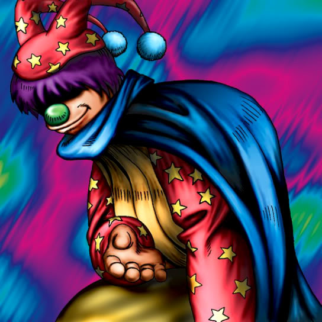

Dream Clown

Description: "When this card is flipped face-up in battle, the opponent is rendered eternally spellbound."
STATS
ATK: 1200
DEF: 900DECK COST
Deck Cost per Card: 26EFFECT NOT IMPLEMENTED
Fusion List (2 Possible Fusions)
- Dream Clown + Milus Radiant = Tiger Axe
- Dream Clown + Skull Servant = Armored Zombie